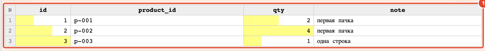
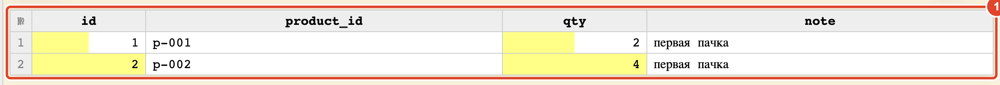
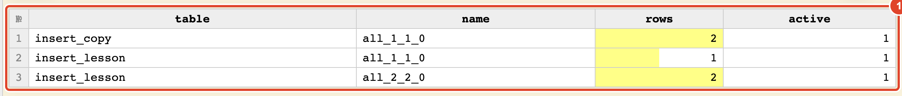

Пачкаbatch
Несколько строк, отправленных одной командой INSERT.
Примердве строки с id 1 и 2 в одном VALUES.
Где§4
Справочник по ClickHouse · модуль 1 · первые данные
Глава 1.5
Добавим строки в созданную таблицу, скопируем результат запроса в другую таблицу и посмотрим, как вставки превращаются в части MergeTree.
Что предстоит решить
В таблицу корзины нужно добавить строки с одинаковыми столбцами. Сначала отправим одну строку, затем несколько строк одной командой. После этого скопируем часть данных запросом и сравним части MergeTree.
Зачем это знатьПосле создания таблицы в ней есть столбцы и правила, но нет строк. INSERT передаёт серверу новые значения.
В бумажной картотеке сначала выбирают пустую карточку, заполняют её поля и кладут карточку в шкаф. В ClickHouse похожий маршрут состоит из трёх частей: указать таблицу, передать значения и проверить сохранённые строки.
INSERT — команда добавления строк. В форме VALUES строки записываются прямо в запросе. В форме SELECT источником новых строк становится результат другого запроса.
VALUESили результат SELECTимя → типзначения проходят правила столбцовновая частьстроки сортируются по ключуНа схеме источник передаёт значения в столбцы таблицы. Сервер проверяет типы и значения по структуре таблицы. Затем MergeTree создаёт часть, сортирует её по ключу и записывает на диск. Начнём с небольшой таблицы в базе sandbox.
Зачем этот шагСоздадим отдельную таблицу для опыта, чтобы не менять данные курса.
Имя таблицы insert_lesson будет использоваться во всех запросах главы. Поле note допускает пропуск: если его не передать, сработает DEFAULT из главы 1.3.
DROP TABLE IF EXISTS sandbox.insert_lesson;
CREATE TABLE sandbox.insert_lesson (
id UInt32,
product_id String,
qty UInt16,
note Nullable(String) DEFAULT 'не указано'
) ENGINE = MergeTree
ORDER BY id;Команда удаления нужна только для повторного запуска опыта. Она убирает старую таблицу и её строки. Новая таблица хранит четыре столбца. Ключ id задаёт порядок строк внутри частей.
Таблица готова. Следующий запрос добавит одну строку и покажет полный список полей.
Зачем этот шагПроверим минимальную форму INSERT … VALUES на одной записи.
В скобках после имени таблицы перечислим столбцы. После VALUES передадим для них одну строку в том же порядке. Явный список столбцов защищает запрос от случайной зависимости от порядка всех полей таблицы.
INSERT INTO sandbox.insert_lesson (id, product_id, qty, note) VALUES (3, 'p-003', 1, 'одна строка');
Команда не возвращает строк результата. Проверим добавленную запись отдельным запросом:
SELECT * FROM sandbox.insert_lesson ORDER BY id;

На кадре строка с id = 3 содержит товар p-003 и количество 1. Две другие строки появятся в следующем шаге. Сортировка в SELECT нужна для устойчивого порядка ответа.
строка с id 3 сохранена, её четыре значения попали в правильные столбцы.
Зачем этот шагДобавим несколько записей одной командой и сравним их с одиночной вставкой.
Пачка — несколько строк, отправленных одним запросом. Каждая строка имеет круглые скобки, а строки разделяются запятыми. Все строки должны соответствовать одним и тем же столбцам и типам.
INSERT INTO sandbox.insert_lesson (id, product_id, qty, note)
VALUES
(1, 'p-001', 2, 'первая пачка'),
(2, 'p-002', 4, 'первая пачка');После запроса в таблице три строки: одна добавлена отдельно, две — одной пачкой. На стенде итоговый запрос вернул sum(qty) = 7: 2 + 4 + 1.
На схеме две входные строки идут одним маршрутом. MergeTree создаёт для этой вставки отдельную часть из двух строк. Это уменьшает число отдельных запросов и лучше соответствует пакетной записи.
в таблице три строки; значения количества равны 2, 4 и 1; сумма равна 7.
Зачем это знатьПонять, почему список столбцов в INSERT должен совпадать со значениями и как работает пропущенное поле.
Список после имени таблицы задаёт соответствие по позиции: первое значение идёт в первый названный столбец, второе — во второй. Значение проверяется типом столбца. Если столбец не назван, сервер применяет его значение по умолчанию.
| В запросе | Результат | Причина |
|---|---|---|
(id, product_id, qty, note) | четыре значения | все поля переданы явно |
(id, product_id, qty) | note = «не указано» | сработал DEFAULT |
| без списка столбцов | нужны значения всех полей | порядок берётся из структуры таблицы |
В этой главе все строки передают note явно. Поэтому кадр показывает текст из запроса. Значение по умолчанию здесь не используется. Смысл DEFAULT уже проверен в главе 1.3; список столбцов помогает читать и менять запрос.
Схема показывает позиционное соответствие. Если поменять порядок столбцов, нужно поменять порядок значений. Иначе запрос может завершиться ошибкой типа или записать данные в смыслово неподходящее поле.
Зачем этот шагПеренесём строки из одной таблицы в другую без переписывания каждой строки в VALUES.
Форма INSERT … SELECT получает строки результатом запроса. Столбцы после имени назначения описывают порядок входных выражений после SELECT. В опыте создадим пустую копию структуры и перенесём только строки с количеством от 2.
DROP TABLE IF EXISTS sandbox.insert_copy; CREATE TABLE sandbox.insert_copy AS sandbox.insert_lesson;
INSERT INTO sandbox.insert_copy (id, product_id, qty, note) SELECT id, product_id, qty, note FROM sandbox.insert_lesson WHERE qty >= 2;

На кадре остались строки с id = 1 и id = 2. Строка с количеством 1 не прошла условие WHERE. Запрос одновременно читает источник и добавляет результат в назначение.
Стрелки показывают перенос результата фильтра. Значения уже отобраны запросом и сразу поступают в целевую таблицу.
в копии две строки; их количество равно 2 и 4.
Зачем это знатьСвяжем запросы INSERT с устройством MergeTree, которое разбирали в главе 1.4.
Каждый INSERT в MergeTree записывает отдельную порцию строк. В нашем опыте одиночная строка создала часть из 1 строки, а пакет из двух строк — часть из 2 строк. INSERT SELECT создал часть из 2 строк в таблице-копии.

В кадре столбец table различает две таблицы. У insert_lesson видны части на 1 и 2 строки. У insert_copy видна одна часть на 2 строки. Число частей не равно числу строк: одна пачка содержит несколько строк.
Схема связывает команды с наблюдаемым состоянием системной таблицы. Большие пачки уменьшают количество отдельных частей на один и тот же объём данных. Здесь достаточно связать каждую вставку с наблюдаемой частью.
Сверьте список после имени таблицы и каждую строку после VALUES. Уберите лишнее значение или добавьте нужный столбец с подходящим значением.
Проверьте тип через DESCRIBE sandbox.insert_lesson. Количество для UInt16 должно быть в его диапазоне, а текст передаётся в кавычках.
MergeTree не считает одинаковые строки ошибкой. Повторная команда добавит их ещё раз. Перед повтором опыта выполните подготовительный DROP TABLE и CREATE TABLE.
Проверьте условие WHERE и запрос источника отдельно. Сначала выполните SELECT id, product_id, qty, note FROM sandbox.insert_lesson WHERE qty >= 2. Затем добавьте этот запрос после INSERT INTO.
Порядок ответа задаёт ORDER BY в запросе чтения. Ключ MergeTree определяет порядок хранения внутри частей, но сам по себе не является гарантией порядка выдачи.
Одна команда INSERT INTO … VALUES с пятью строками в круглых скобках, разделёнными запятыми.
Первая вставка добавила одну строку и создала часть на 1 строку. Вторая вставка добавила две строки одной пачкой и создала часть на 2 строки. Число частей соответствует порциям вставки. Одна порция может содержать несколько строк.
Строки с id 1 и 2. У них количество 2 и 4; строка id 3 с количеством 1 условие не проходит.
Для созданной таблицы сервер применит DEFAULT 'не указано'. Это правило действует, если способ вставки разрешает заполнение пропущенного столбца по умолчанию.
Создайте таблицу sandbox.large_orders той же структуры, но вставьте из shop.orders только заказы с суммой больше 100 000:
CREATE TABLE … AS shop.orders;SELECT с условием total > 100000;INSERT INTO … SELECT;count() и sum(total).В новой таблице есть только строки с total > 100000. Список столбцов назначения и выражений SELECT совпадает по числу и порядку. Исходная таблица shop.orders не меняется.
INSERT INTO db.t (a, b) VALUES (1, 'x')VALUES (1, 'x'), (2, 'y')INSERT INTO dst SELECT … FROM srcSELECT * FROM db.t ORDER BY idSELECT table, rows FROM system.partsНесколько строк, отправленных одной командой INSERT.
Примердве строки с id 1 и 2 в одном VALUES.
Где§4
Добавление результата запроса в другую таблицу.
ПримерWHERE qty >= 2 оставил две строки.
Где§6
Итог главы: VALUES добавляет записанные вручную строки, пачка объединяет несколько строк одной командой, а INSERT SELECT переносит результат запроса. В MergeTree каждая вставка становится отдельной частью, поэтому размер пачки влияет на число частей.
Следующая тема — чтение столбцов и выражений с фильтрацией и сортировкой результата.